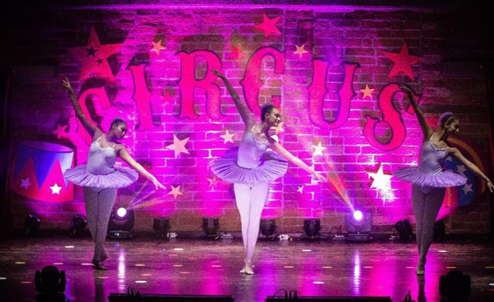
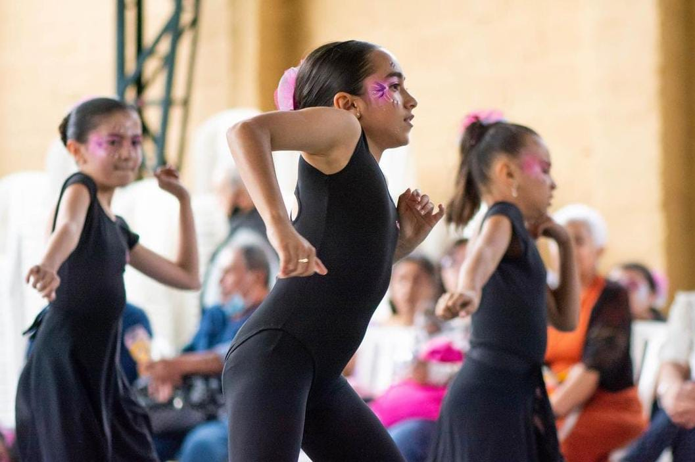
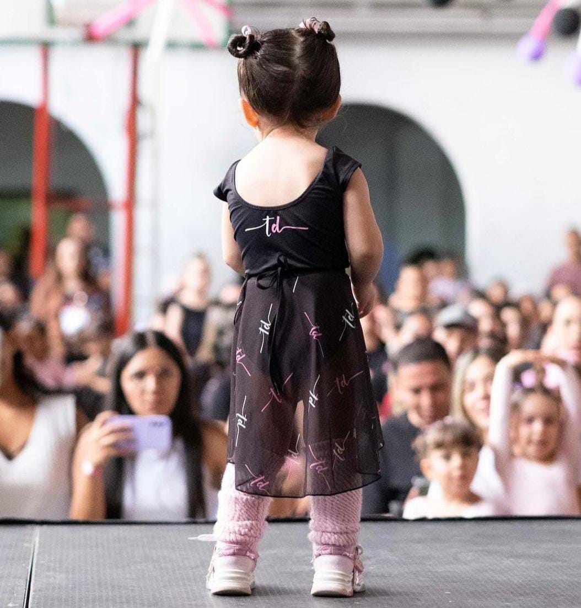
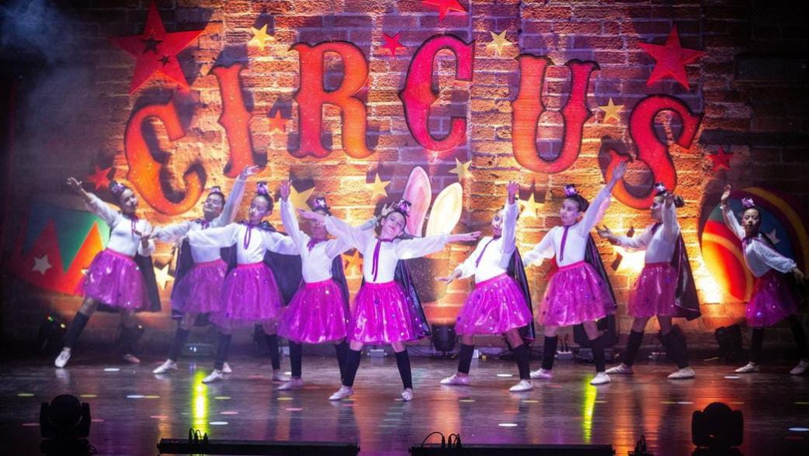

Nuestra historia
Fue creado en Septiembre del año 2018 en el municipio de Caldas - Antioquia. Por su directora Juliana Andrea Salgar Medina quien tiene como objetivo principal educar niños, niñas, jóvenes y adultos con un énfasis artístico desde la danza, demostrar que a través del arte se pueden educar y transformar vidas.
Misión
Fomentar la expresión artística y el desarrollo personal a través de la enseñanza y prática de diversas disciplinas de danza, promoviendo la creatividad, el bienestar físico y la conexión emocional con el movimiento.
Visión
Es ser un espacio innovador e inclusivo en donde los participantes encuentren inspiración para desarrollar su expresión artística, nutriendo un ambiente donde la diversidad de estilos de baile se fusiona con la creatividad, contribuyendo así al crecimiento personal y a la aprecicación de la danza como forma única de comunicación y conexión.
Nuestros programas
El taller de danza es una escuela enfocada en la enseñanza de diferentes tipos de danza como lo son: iniciación al movimiento, baby ballet, ballet, danza urbana, jazz, folclor colombiano y ritmos tropicales
Está dirigido a niños y niñas desde los 2 años de edad
Iniciación al movimiento

Este curso está basado fundamentalmente en psicomotricidad aplicada a la danza para pequeños estudiantes de 2 a 3 años y siempre desde un punto de vista lúdico.
...Las clases las forman varios tipos de juegos, donde los más pequeños se estarán divirtiendo y sin darse cuenta van aprendiendo entre otras cosas a diferenciar ritmos musicales o controlar zonas concretas del cuerpo.
Baby ballet

Este curso está basado fundamentalmente en psicomotricidad aplicada a la danza para pequeños estudiantes de 2 a 3 años y siempre desde un punto de vista lúdico.
...Las clases las forman varios tipos de juegos, donde los más pequeños se estarán divirtiendo y sin darse cuenta van aprendiendo entre otras cosas a diferenciar ritmos musicales o controlar zonas concretas del cuerpo.
Ballet
Este curso está basado fundamentalmente en psicomotricidad aplicada a la danza para pequeños estudiantes de 2 a 3 años y siempre desde un punto de vista lúdico.
...Las clases las forman varios tipos de juegos, donde los más pequeños se estarán divirtiendo y sin darse cuenta van aprendiendo entre otras cosas a diferenciar ritmos musicales o controlar zonas concretas del cuerpo.
Danza urbana

Este curso está basado fundamentalmente en psicomotricidad aplicada a la danza para pequeños estudiantes de 2 a 3 años y siempre desde un punto de vista lúdico.
...Las clases las forman varios tipos de juegos, donde los más pequeños se estarán divirtiendo y sin darse cuenta van aprendiendo entre otras cosas a diferenciar ritmos musicales o controlar zonas concretas del cuerpo.
Folclor colombiano

Este curso está basado fundamentalmente en psicomotricidad aplicada a la danza para pequeños estudiantes de 2 a 3 años y siempre desde un punto de vista lúdico.
...Las clases las forman varios tipos de juegos, donde los más pequeños se estarán divirtiendo y sin darse cuenta van aprendiendo entre otras cosas a diferenciar ritmos musicales o controlar zonas concretas del cuerpo.
Eventos
MUESTRAS ACADÉMICAS: Abirl
DIA DE LA FAMILIA: Agosto-Septiembre
CLAUSURA: Diciembre
Fechas eventos 2024
MUESTRAS ACADÉMICAS
Sábado 27 Agosto
DIA DE LA FAMILIA
Sábado 31 Agosto
CLAUSURA
Domingo 8 Diciembre
Reseña de clientes
Me encantó el taller de Danza! Los instructores son muy pacientes y conocedores. Me sentí cómoda desde el primer día. ¡Lo recomiendo!
Ana Garcés
Usuario
Este taller de Danza es increíble! La energía es contagiosa y los ejercicios son divertidos. He mejorado mucho mi técnica y mi confianza. ¡Volveré!
Daniel Bolivar
Estudiante

Excelente taller, el ambiente es muy acogedor y los instructores son muy profesionales. Definitivamente seguiré llevando a mi hija.